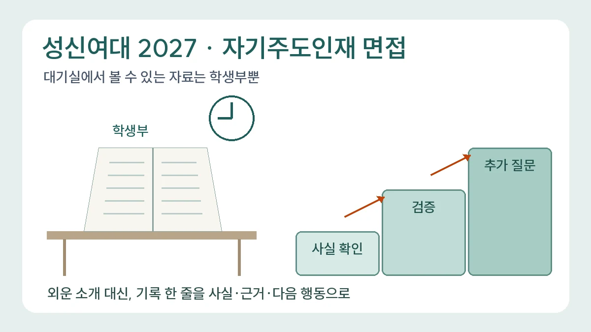

성신여대 2027 자기주도인재 면접, 대기실에서 학생부만 볼 수 있다면 무엇을 확인할까?
성신여대 2027 자기주도인재전형 면접의 공개된 진행 순서(학생부 사실 확인 및 검증 → 추가 질문)와 대기실 규칙, 새로 들어간 공동체역량을 모집요강 기준으로 정리하고, 입학처 FAQ 화면과 다른 수치 주의점, 학생부 한 줄을 사실·근거·다음 행동으로 복기하는 교육용 연습을 제안합니다.

성신여자대학교 2027학년도 학생부종합전형(자기주도인재전형) 지원자를 위한 면접 준비 안내입니다. 면접 진행 방식은 모집요강과 2026년 7월 14일 입학처 공지(면접고사 사전안내)에 이미 공개된 내용이며, 오늘 새로 발표된 소식이 아닙니다.[1][2] 1단계 합격자와 면접고사장 발표는 오늘(11월 13일) 오전 10시로 예정돼 있으며, 이 글은 그 발표 전에 작성했습니다.[1][2] 2027학년도는 2026년 입시 시즌에 준비하는 전형이며, 2028학년도 자료를 대신 적용하지 않습니다.
“면접 대기실에서 학생부만 볼 수 있다면, 그 짧은 시간에 무엇을 다시 읽어야 할까요?” 성신여대 자기주도인재 면접은 이 질문에 답을 정해 두고 가는 편이 좋습니다. 이번 글은 예상 질문 목록이 아니라, 공개된 면접 진행 순서(사실 확인 및 검증 → 추가 질문)에 맞춰 학생부를 복기하는 방법을 다룹니다. 앞선 한국외대 해설이 평가요소의 이름을 키워드로 오독하지 않는 문제였다면, 이번에는 평가요소와 면접 순서를 함께 읽어 준비 순서를 정하는 문제입니다.
무엇이 공개돼 있나: 진행 순서와 대기실 규칙
모집요강의 면접평가 안내는 면접이 입학사정관 2명과 지원자 1명의 2:1 평가로 약 10분간 진행된다고 밝힙니다.[1] 면접은 학교생활기록부 사실 확인 및 검증, 추가 질문 순으로 진행되고, 블라인드 면접이므로 개인정보 언급을 막기 위해 ‘자기소개’ 질문은 하지 않습니다.[1] 모집요강은 면접평가에서 전공 관련 지식평가와 실기를 시행하지 않는다고도 적고 있습니다.[1]
당일 규칙도 구체적입니다. 면접대기실에서는 학교생활기록부만 열람할 수 있고 그 외 자료는 열람할 수 없으며, 전자기기는 전원을 끈 뒤 지시에 따라 별도로 보관합니다.[1] 신분을 드러낼 수 있는 교복은 착용할 수 없고, 신분증을 반드시 지참해야 합니다.[1] 면접을 마치면 대기실에 다시 들어갈 수 없습니다.[1]
적용 범위: 자기주도인재 1단계 합격자
대상은 2027학년도 성신여대 자기주도인재전형과 정원 외 특수교육대상자전형의 1단계 서류평가 합격자입니다.[1] 1단계는 서류평가 점수 순으로 모집단위별 모집인원의 3배수를 선발하고, 2단계는 1단계 서류평가 점수 60%와 면접평가 40%를 합산합니다.[1] 모집요강의 주요 변경사항 표는 자기주도인재전형에 면접평가요소 ‘공동체역량’이 도입됐다고 표시합니다.[1]
면접일은 모집단위별로 11월 21일(토), 22일(일), 28일(토), 29일(일) 중 하나이며 장소는 돈암 수정캠퍼스입니다.[1][2] 자기 모집단위의 날짜는 7월 14일 공지 첨부 표에서 확인하세요. 이 글은 표의 모집단위별 배정을 옮겨 적지 않았습니다. 개인별 면접대기실 입실시각과 장소는 1단계 합격자 발표 때 조회할 수 있고, 면접은 오전 9시부터 시작합니다.[2]
확인할 점: 입학처 FAQ 화면과 모집요강의 수치가 다릅니다
입학처 학생부종합전형 안내의 FAQ 화면에는 학년도 표기 없이 ‘2단계 서류평가 70%+면접평가 30%’와 진로역량 70%·학업역량 30%의 면접평가항목이 남아 있습니다.[3] 이는 2027학년도 모집요강의 60%·40%, 그리고 진로역량 50%·학업역량 30%·공동체역량 20%와 다릅니다.[1][3] 어느 쪽이 착오인지 대학이 따로 밝힌 자료는 확인하지 못했습니다. 2027학년도 지원자라면 같은 내용을 담은 2027 모집요강과 7월 14일 사전안내를 기준으로 삼고, 오늘 공지될 「수험생 유의사항」에서 다시 대조하는 편이 안전합니다.[1][2]
탐구보고서·세특과의 관계: 면접은 기록의 사실 확인에서 출발합니다
서류 단계와 면접 단계가 같은 세 영역을 보지만, 면접은 제출서류를 활용한 평가요소 평가와 제출서류 관련 사실 확인으로 구성됩니다.[1] 학업역량의 ‘학업적 목표의식’ 항목은 탐구 활동 과정의 지속성·성실성 및 결과의 구체성을 통해 드러나는 자기주도적 학업 수행 역량을 설명합니다.[1] 세특에 적힌 탐구보고서 한 줄을 두고 “무엇을 직접 했고, 결과가 어디까지였는지”를 말할 수 있어야 한다는 뜻으로 읽을 수 있습니다. 진로역량의 진로설계역량은 희망 진로와 연계된 과목 선택의 연속성 및 적절성을 언급하므로, 과목을 고른 이유도 기록과 함께 복기할 대상입니다.[1]
새로 들어간 공동체역량은 성실성, 소통과 협력의 리더십, 나눔과 배려로 나뉘며, 성실성은 자신의 역할에 대해 책임감을 갖고 끝까지 완수하려는 끈기 있는 자세로 정의됩니다.[1] 대학은 항목 정의만 제시하고 질문 예시나 채점 기준을 공개하지 않습니다. 아래는 그 정의를 학생부 복기에 옮긴 편집팀의 준비 제안입니다.
대기실에서 다시 읽을 것: 세 칸 복기표
대기실에서는 학생부 외 메모를 볼 수 없으므로, 따로 만든 요약 노트에 기대는 준비는 당일 쓸모가 없습니다.[1] 면접 전에 학생부 자체를 기준으로 아래 세 칸을 연습해 두고, 당일에는 학생부의 해당 줄만 다시 짚는 방식을 권합니다.
- 사실 확인 칸: 기록된 활동이 언제, 어떤 수업·자리에서, 나의 어떤 역할로 이루어졌는가? 기록 문장에 쓰인 용어를 내 말로 한 문장으로 설명할 수 있는가?
- 검증 칸: 기록의 판단이나 결과를 뒷받침한 근거는 무엇이었나? 근거가 말해 주지 못하는 범위는 어디까지인가?
- 추가 질문 칸: 그다음에 무엇을 바꿨거나 바꾸고 싶은가? 같은 역량이 드러난 다른 기록과 어떻게 이어지는가?
자기소개 질문이 없으므로 첫 답변을 외운 소개문으로 시작할 이유는 줄어듭니다.[1] 대신 학생부 문장 하나를 짚었을 때 ‘사실 → 근거 → 다음 행동’ 순서로 1분 안팎에 말해 보는 연습이 진행 순서에 더 가깝습니다. 1분은 편집팀의 연습 단위일 뿐, 대학이 정한 답변 시간이 아닙니다.
교육용 가상 사례: 공동체역량 기록을 세 칸으로 풀기
다음은 편집팀이 만든 교육용 가상 사례입니다. 실제 학생부·면접 후기나 성신여대의 공개 문항을 옮긴 것이 아니며, 실제로 수행된 활동이라는 뜻도 아닙니다. 본인 학생부에 없는 활동을 이 예시처럼 말하면 사실 확인 단계에서 곤란해집니다.
가상 기록 문장
학급 분리배출 캠페인에서 안내문 제작을 맡아, 반 친구들의 의견을 반영해 안내문을 고쳐 게시함.
준비 전 답변
저는 공동체를 위해 헌신하는 것을 좋아해서 캠페인에 적극적으로 참여했고, 친구들과 소통하며 좋은 결과를 냈습니다.
이 답변은 평가항목의 단어(헌신, 소통)를 되풀이하지만, 기록 문장의 ‘안내문 제작’과 ‘의견 반영’이 실제로 무엇이었는지는 설명하지 않습니다. 검증 질문(“어떤 의견이었나요?”)이 이어지면 말할 내용이 없습니다.
세 칸으로 고친 답변 — 가상 설정에서 가능한 설명
[사실] 제 역할은 안내문 초안을 만드는 일이었습니다. [근거] 처음 안내문을 붙인 뒤 친구들에게 헷갈린 점을 물었더니, 품목 이름만 있고 예시 사진이 없어 판단하기 어렵다는 의견이 여러 번 나왔습니다. [다음 행동] 그래서 자주 헷갈린다는 품목만 골라 그림 예시를 넣은 판으로 다시 게시했습니다. 다만 고친 뒤 실제 분리배출이 나아졌는지는 따로 확인하지 못했습니다.
고친 답변은 역할(성실성), 의견을 모아 바꾼 과정(소통과 협력), 이용자 입장에서 고친 판단(배려)을 단어로 선언하지 않고 행동으로 보여 줍니다. 마지막 문장처럼 확인하지 못한 결과를 구분해 말하는 것도 검증 단계에서 중요합니다. 실제 효과를 측정하지 않았다면 “나아졌다”고 말하지 않는 편이 정확합니다.
지금 할 일
- 오늘 오전 10시 이후: 입학처에서 1단계 결과와 개인별 면접대기실 입실시각·장소를 조회하고, 함께 공지되는 「수험생 유의사항」을 저장해 두세요.[1][2] 면접시간과 순서는 변경할 수 없습니다.[2]
- 면접 날짜 확인: 7월 14일 공지 첨부 표에서 자기 모집단위의 날짜를 확인하고, 다른 대학의 수능 이후 면접 일정과 겹치는지 점검하세요.
- 면접 전까지: 학생부에서 공동체역량(또는 사범대학의 교직 적성·인성), 학업적 목표의식, 과목 선택 이유가 드러난 기록을 각각 두세 줄씩 골라 위 세 칸으로 말해 보세요.
- 당일: 신분증, 교복이 아닌 복장, 전자기기 보관 절차를 확인하고, 대기실에서는 미리 정한 학생부 줄만 다시 짚으세요.[1]
불확실성과 다음 확인 시점
이번 확인은 입학처 모집요강 메뉴의 2027학년도 수시 모집요강 PDF, 7월 14일 공지 본문과 첨부 PDF, 학생부종합전형 안내 FAQ 화면에 한정됩니다. 2026년 11월 13일 오전 현재 수시 공지 목록에서 자기주도인재 면접에 관한 별도 수정 공지는 확인되지 않았습니다. 학생부 지참 방법이나 대기실 운영 세부 사항은 오늘 공지될 「수험생 유의사항」이 최종 기준입니다.[1][2] FAQ 화면과 모집요강의 수치 차이가 정정되는지도 그때 함께 확인하세요.
평가요소에 공동체역량이 들어갔다는 사실만으로 공동체 관련 질문이 반드시 나온다거나 특정 답변이 더 높은 점수를 받는다고 단정할 수 없습니다. 이 글은 실제 질문이나 점수·합격을 예측하지 않으며, 다른 대학·전형에는 해당 공식 자료를 다시 확인해야 합니다.
관련 기존 가이드
- 학생부 기반 면접 준비 가이드 — 학생부 전체를 복기하는 기본 틀로 사용하세요.
- 학생부 면접 검증 질문 가이드 — 사실 확인 다음에 이어지는 ‘왜’, ‘어떻게’ 질문을 연습할 때 함께 보세요.
- 인하대 2027 팀 탐구 역할 설명 해설 — 협력 활동에서 ‘제가 한 일’을 분리해 말하는 연습에 활용하세요.
- 서울시립대 2027 블라인드 면접 해설 — 학교명·신상정보 없이 학습 근거를 설명하는 연습을 참고하세요.
공식 출처와 확인 범위
- [1] 성신여자대학교 2027학년도 수시 신입생 모집요강(PDF)
- [2] 성신여대 입학처 공지: 2027학년도 학생부종합전형(자기주도인재 및 특수교육대상자전형) 면접고사 사전안내(2026-07-14)
- [3] 성신여대 입학처 학생부종합전형 안내 FAQ(연도 표기 없음)
모집요강은 PDF 6쪽(책자 4쪽)의 주요 변경사항, PDF 12쪽(책자 10쪽)의 전형일정, PDF 18~19쪽(책자 16~17쪽)의 자기주도인재전형 평가요소·반영비율·선발방법, PDF 44~45쪽(책자 42~43쪽)의 면접평가 공통사항과 평가항목을 확인했습니다. 7월 14일 공지 첨부 PDF의 면접 진행 안내는 모집요강 면접평가 안내와 같은 내용입니다. 공식 문항·도표·PDF는 재게시하지 않았고 가상 사례·복기표·일러스트는 독립적으로 작성했습니다.
이 칼럼은 운영자의 관점과 일반 교육 정보를 담고 있으며 특정 대학 합격이나 평가 결과를 보장하지 않습니다.
함께 볼 글

학생부 기반 면접 준비: 영역별 활동 복기와 꼬리질문·STAR·PREPNEW
세특·창체·공동체 활동을 동기·과정·결과·성찰로 정리하고 실제 기여와 한계를 설명하는 서류 기반 면접 연습법입니다.

학생부 기반 면접, 탐침질문에 흔들리지 않는 답변법: 동기·과정·결과·성찰로 설명하기NEW
학생부에 적힌 탐구와 활동을 단순 암기가 아닌 자신의 경험으로 설명하기 위해, 동기·과정·결과·성찰의 네 단계와 탐침질문 대응법을 안내합니다.

학생부 기반 대입 면접 꼬리질문 점검표: 주장·근거·한계 연결하기NEW
보고서의 핵심 주장에 조건과 반대 질문을 붙여, 근거를 찾을 수 있는 답변과 아직 확인하지 못한 답변을 구분합니다.